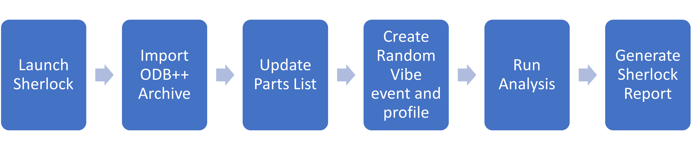

User guide#
This section provides an overview of PySherlock and explains how to use it.
Prerequisites#
For installation instructions and information on launching Sherlock and the gRPC server, see Getting started. The Sherlock gRPC server must be running to use PySherlock.
PySherlock services#
PySherlock methods are divided into modules that correspond to major Sherlock functional areas. For descriptions of each module’s classes, methods, and functions, see the API reference.

Using PySherlock#
After the Sherlock gRPC server is started, you can use PySherlock methods to perform Sherlock client operations.
Subsequent topics describe how to use PySherlock to automate the process depicted in this diagram:
{kind=link}
Launch Sherlock#
Use the launch_sherlock
method to launch Sherlock and start the gRPC server on the default port:
from ansys.sherlock.core.launcher import launch_sherlock
sherlock = launch_sherlock()
This method returns the sherlock gRPC connection object, which is used to invoke
the APIs from their respective services.
Import ODB++ archive#
Use the ansys.sherlock.core.project.Project.import_odb_archive>()
method to import an ODB++ archive file (ODB++ Tutorial.tgz). This code imports the
archive file and creates a project named Tutorial with a CCA named Main Board.
sherlock.project.import_odb_archive(
"C:\\Temp\\ODB++ Tutorial.tgz",
True,
True,
True,
True,
project="Tutorial",
cca_name="Main Board"
)
For information on the project module and its methods, see Project.
Update parts list#
Use the aansys.sherlock.core.parts.Parts.update_parts_list>() method to update the
parts list for the previously created CCA Main Board. This code uses the Sherlock Part Library
to update the parts list:
sherlock.parts.update_parts_list(
"Tutorial",
"Main Board",
"Sherlock Part Library",
"Both",
"Error"
)
For information on the parts module and its methods, see Parts.
Add random vibe event#
Use the ansys.sherlock.core.lifecycle.Lifecycle.add_random_vibe_event>() method
to add a random vibe event:
sherlock.lifecycle.add_random_vibe_event(
"Tutorial",
"Phase 1",
"RVEvent 1",
100,
"ms",
0.5,
"PER MIN",
"0,0",
"Uniaxial",
"0,0,-1"
)
For information on the lifecycle module and its methods, see Lifecycle.
Add random vibe profile#
Use the ansys.sherlock.core.lifecycle.Lifecycle.add_random_vibe_profiles>() method to
add a random vibe profile:
sherlock.lifecycle.add_random_vibe_profile(
"Tutorial",
"Phase 1",
"RVEvent 1",
"Profile 1",
"HZ",
"G2/Hz",
[(30.4, 7.61e-5), (204, 0.1), (296, 0.06), (385, 0.06), (454, 0.03), (497, 0.06)]
)
For information on the lifecycle module and its methods, see Lifecycle.
Run analysis#
Use the ansys.sherlock.core.analysis.Analysis.run_analysis>() method to run a random
vibe analysis:
sherlock.analysis.run_analysis(
"Tutorial",
"Main Board",
[
("RANDOMVIBE",
[
("Phase 1", ["RVEvent 1"])
]
)
]
)
For information on the analysis module and its methods, see Analysis.
Generate Sherlock report#
Use the ansys.sherlock.core.project.Project.generate_project_report>() method to
generate a Sherlock report for the project Tutorial and save it to a PDF file
in C:\Temp\tutorial_project_report.pdf:
sherlock.project.generate_project_report(
"Tutorial",
"User Name",
"Ansys, Inc",
"C:\\Temp\\tutorial_project_report.pdf"
)
For information on the project module and its methods, see Project.